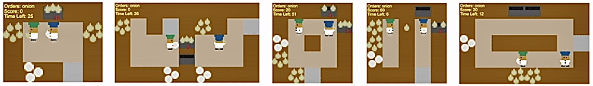

We evaluate whether an interpretable policy tree can collaborate
with unseen AI partners and real human partners while avoiding
online LLM calls at every decision step.
The benchmark contains five Overcooked-AI layouts: Cramped Room, Coordination Ring, Counter Circuit, Asymmetric Advantages, and Forced Coordination. Each episode lasts 400 environment steps, and team reward is determined by delivered soups.

Overcooked-AI layouts used in the evaluation.
AI Partners
SP, PBT, FCP, MEP, COLE, and BC are used as held-out partner policies.
LLM Baselines
ProAgent and CausalPlan represent online LLM-based collaboration methods.
Variants
Co-π-tree is compared with variants that remove explicit partner use or refinement.